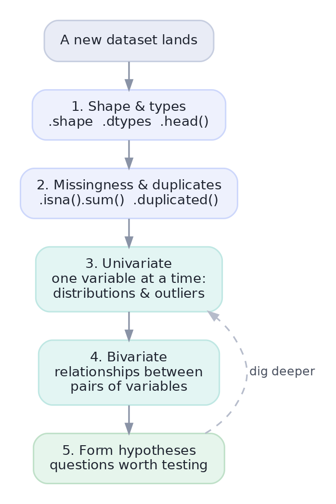

The EDA Mindset
A repeatable first-hour routine for meeting any new dataset.
Before you model, test, or present anything, you have to actually understand the data in front of you. Exploratory Data Analysis (EDA) is that systematic first look: you check the data's shape and quality, study each variable, look at how variables relate, and let what you see suggest the questions worth asking. Skip it and you build on sand — cleaning bugs, outliers, and wrong assumptions all slip through. This lesson gives you a repeatable EDA routine for any dataset.
ConceptWhat EDA is — and what it's for
EDA is the open-ended investigation you do before committing to a model or a conclusion. Its three goals:
- Understand the data: how big is it, what's each column, what's typical and what varies (everything from Track 1).
- Find problems: missing values, wrong types, duplicates, impossible entries, outliers (everything from Track 2's cleaning).
- Generate questions: spot patterns and oddities that become hypotheses to test later.
EDA is exploratory — you're looking around with an open mind, not confirming a preset answer. That openness is the point: the data often surprises you.
MethodThe first-hour checklist
Meeting a new dataset can feel overwhelming, so follow the same routine every time. It moves from the whole table down to single variables, then to relationships, then to questions:

Two terms for step 3 and 4: univariate analysis looks at one variable at a time (its distribution, center, spread, outliers); bivariate analysis looks at two variables together (how does spend relate to region? does return rate differ by channel?). Always do univariate first — you can't interpret a relationship until you understand each variable alone.
Worked exampleRun the checklist on real data
Here's the routine in code, on a small orders table. Notice it's just the Track 1 summaries and Track 2 inspection tools, applied in a deliberate order — that ordering is the skill.
import pandas as pd
df = pd.DataFrame({
"region": ["North", "South", "North", "West", "South", "North"],
"channel": ["Web", "Mobile", "Web", "Store", "Mobile", "Web"],
"amount": [120, 45, 200, 30, 60, 95],
"returned": [False, True, False, False, True, False],
})
# 1. Shape & types
print("shape:", df.shape)
# 2. Quality: missing values and duplicate rows
print("missing values:", int(df.isna().sum().sum()), "| duplicate rows:", int(df.duplicated().sum()))
# 3. Univariate: understand 'amount' on its own
print("amount -> mean ${:.0f}, min ${}, max ${}".format(df.amount.mean(), df.amount.min(), df.amount.max()))
# 3. Univariate: counts for a category
print("orders per region:", df.region.value_counts().to_dict())
# 4. Bivariate: does average amount differ by region?
print("avg amount by region:", df.groupby("region").amount.mean().round(0).to_dict())shape: (6, 4)
missing values: 0 | duplicate rows: 0
amount -> mean $92, min $30, max $200
orders per region: {'North': 3, 'South': 2, 'West': 1}
avg amount by region: {'North': 138.0, 'South': 52.0, 'West': 30.0}In six lines you now know: the table's size, that it's clean (no missing or duplicate rows), what a typical order looks like, where orders come from, and a hint of a bivariate pattern — the North's average order looks larger. That last line is a question, not a conclusion: is the difference real, or just six rows of noise? You'd answer it with the hypothesis test from Lesson 1.9. EDA hands testing its questions.
Numbers alone can deceive — remember Anscombe's quartet from Lesson 1.11, where four datasets shared identical statistics but looked completely different. So EDA is never just .describe(); the moment a variable matters, plot it. That's exactly what the next two lessons are about.
★ Key points to remember
- EDA is the systematic first look: understand the data, find problems, generate questions — before any modeling.
- Follow the same routine every time: shape & types → missingness & duplicates → univariate → bivariate → hypotheses.
- Univariate = one variable alone (do this first); bivariate = two variables together.
- EDA produces questions to test, not final answers — it feeds Track 1's inference.
- Summary numbers can hide the truth (Anscombe) — always plot what matters.
◆ Practice▸
Show solution & reasoning
- Shape & types —
df.shape,df.dtypes,df.head(). 2. Missingness & duplicates —df.isna().sum(),df.duplicated().sum(). 3. Univariate —df['x'].describe(),df['cat'].value_counts(), a histogram. 4. Bivariate —df.groupby('g')['x'].mean(), a scatter or boxplot. 5. Form hypotheses — write down the questions the patterns suggest, to test later.
df.describe(), sees nothing unusual, and declares the data 'clean and understood.' Why is that premature?Show solution & reasoning
describe() only shows summary statistics for numeric columns — it can miss missing-value patterns, duplicate rows, wrong dtypes, categorical issues, and (per Anscombe) very different distributions that share the same mean and SD. You must also check .isna(), .duplicated(), .dtypes, value_counts() for categories, and plot the variables. Summary numbers are a start, not a substitute for looking.
◎ Deep dive: exploratory vs. confirmatory analysis, and why you must look▸
Exploratory vs. confirmatory analysis. EDA (a term coined by John Tukey in 1977) is exploratory: you look for patterns with an open mind. Confirmatory data analysis tests a pre-specified hypothesis. The two must stay honest about which you're doing, because of a trap: if you explore freely and then run a significance test on the most striking pattern you found, the p-value is invalid — you've effectively run many implicit tests and reported the luckiest (the multiple-comparisons problem from Lesson 1.9). Best practice: explore on the data, but confirm surprising findings on fresh data or with a pre-registered test.
Look before you compute. It is genuinely common for a single plot to overturn a conclusion that summary statistics supported — a bimodal distribution hiding behind a mean, an outlier inflating a correlation, a trend that's really two subgroups (Simpson's paradox, coming in Track 5). The discipline 'never trust a statistic you haven't plotted' is why visualization (the next lessons) is inseparable from EDA.
A classic prompt is "here's a dataset — what do you do first?" Don't name a model. Walk the checklist: check shape and types, then data quality (missingness, duplicates, impossible values), then distributions of key variables, then relationships, and say you'd plot as you go and write down questions to test. That structured, look-first answer is exactly the maturity they're probing for.